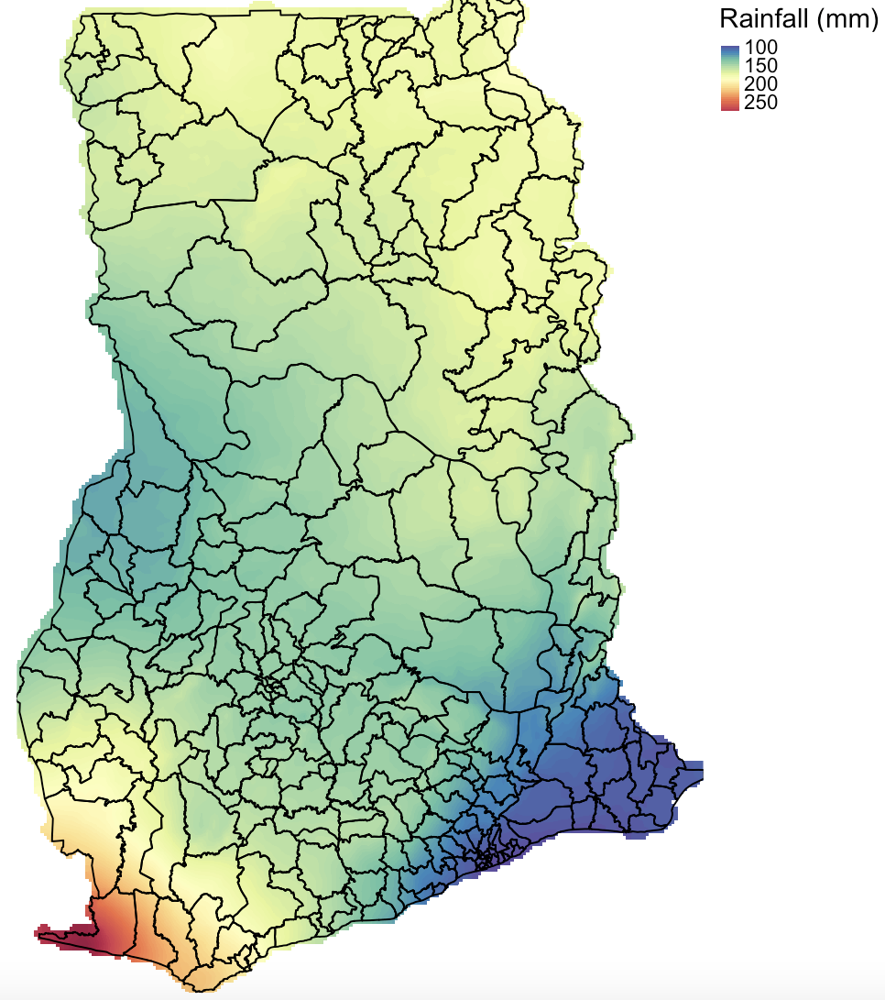
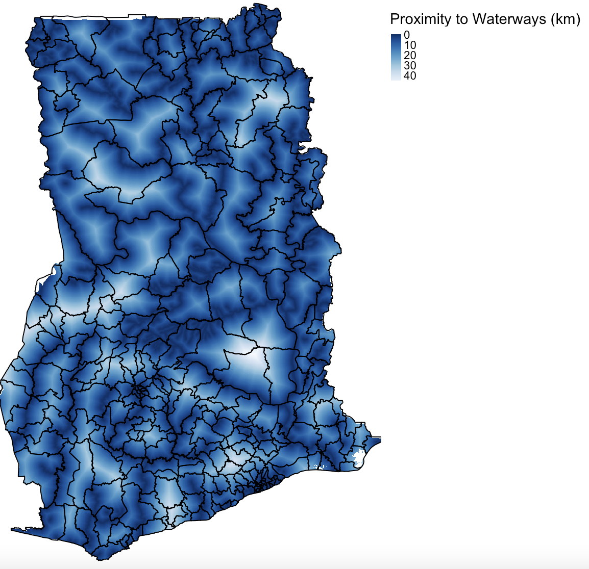
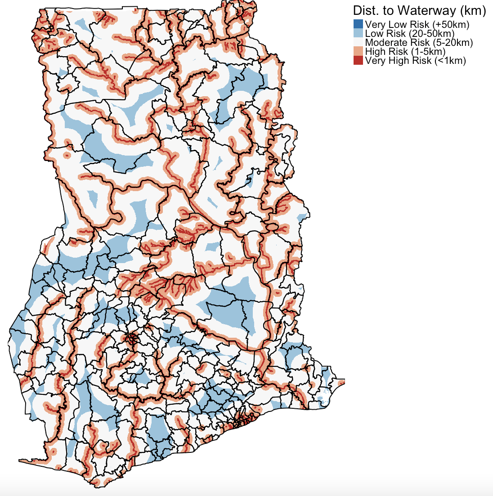
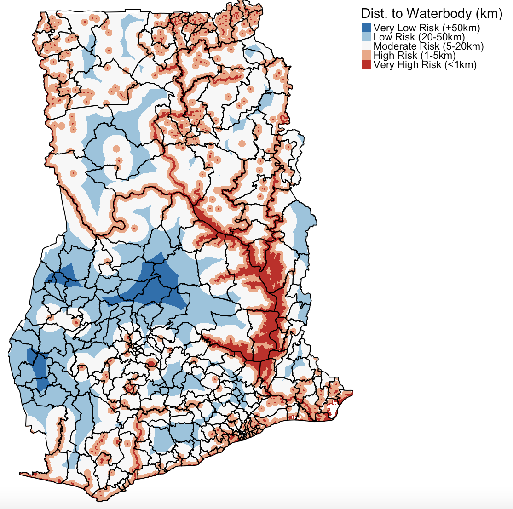
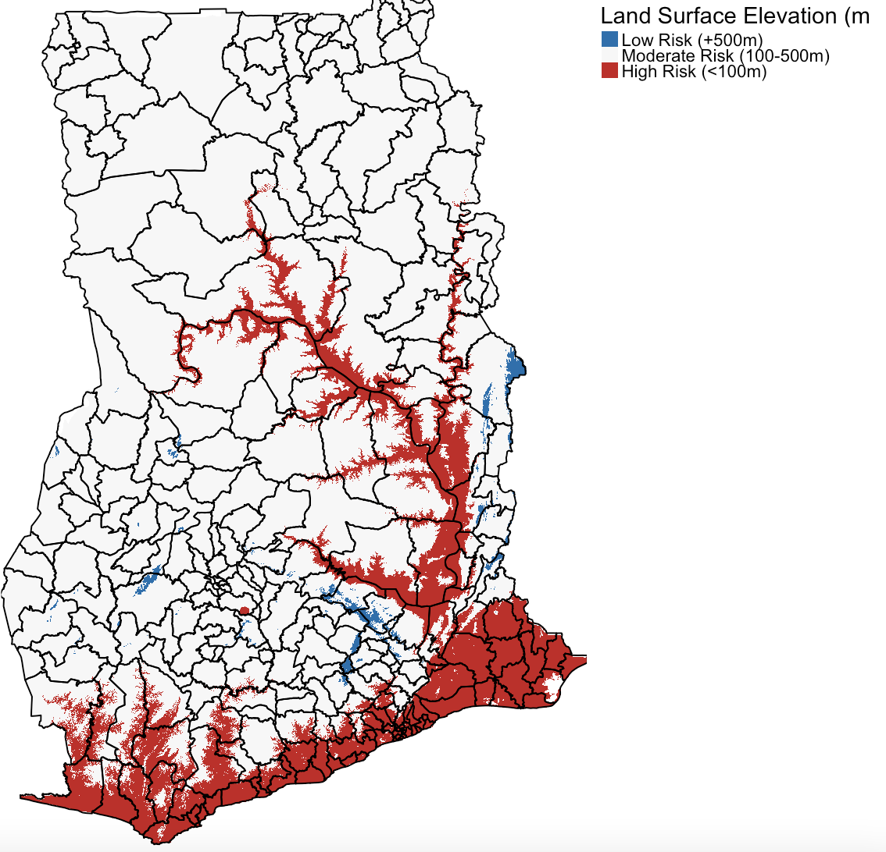
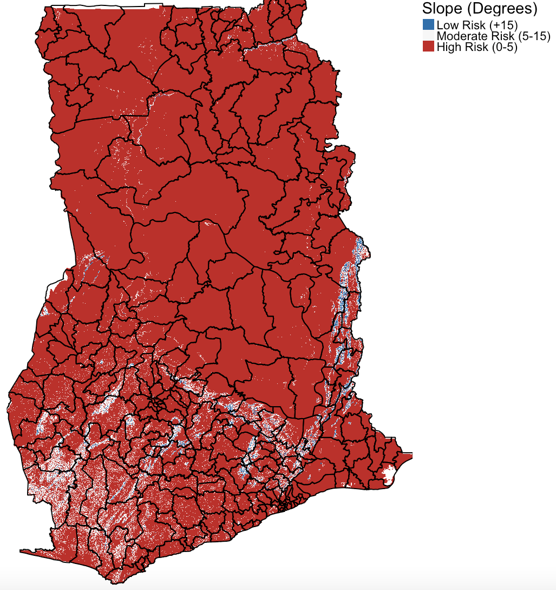
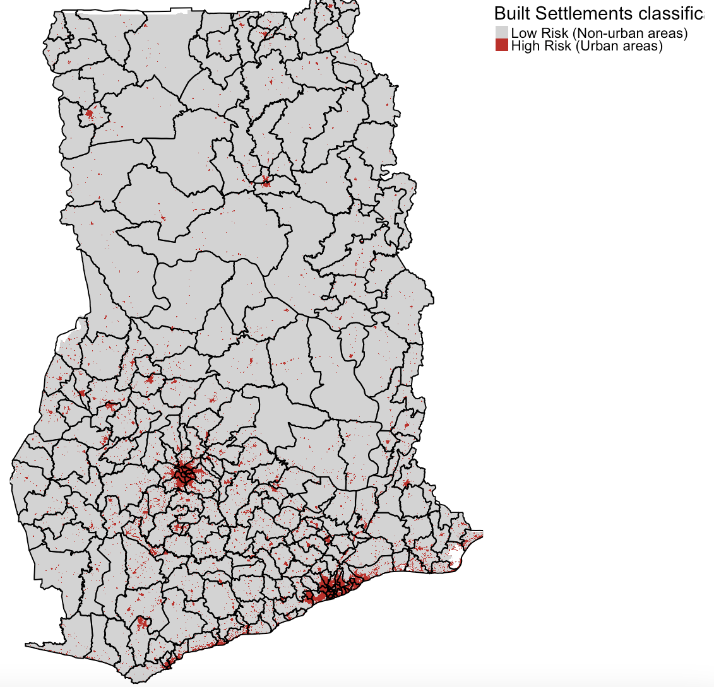
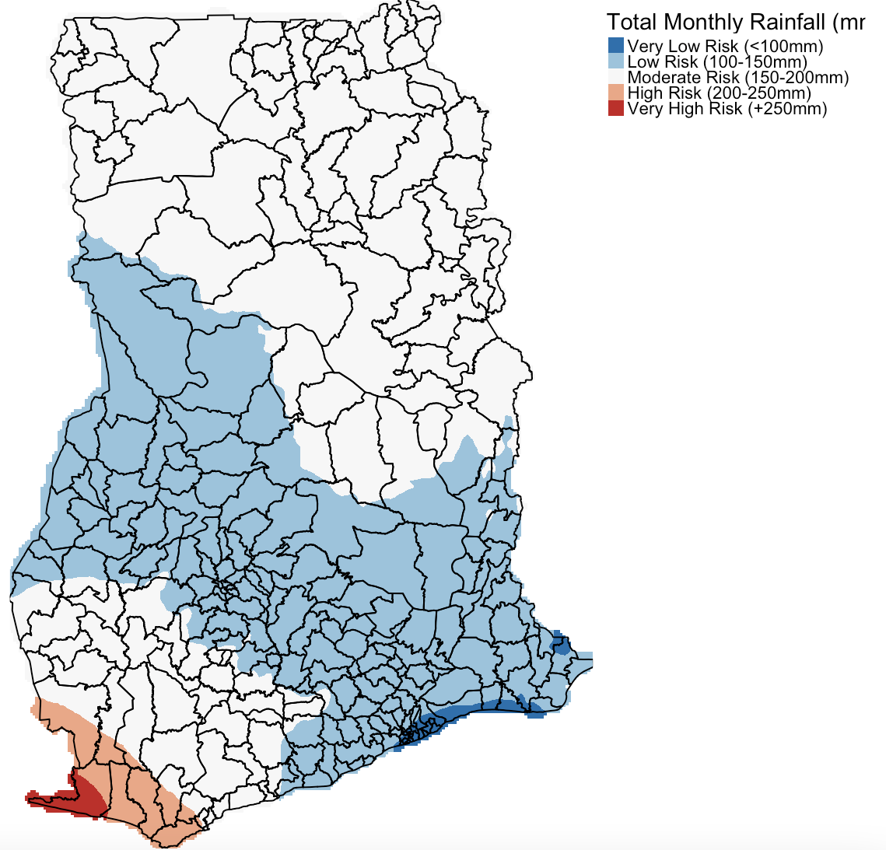
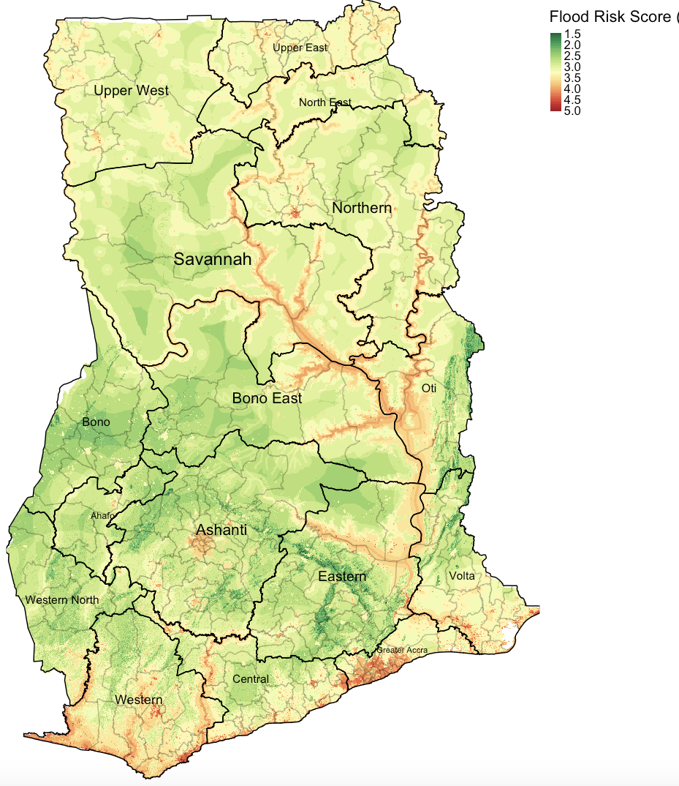
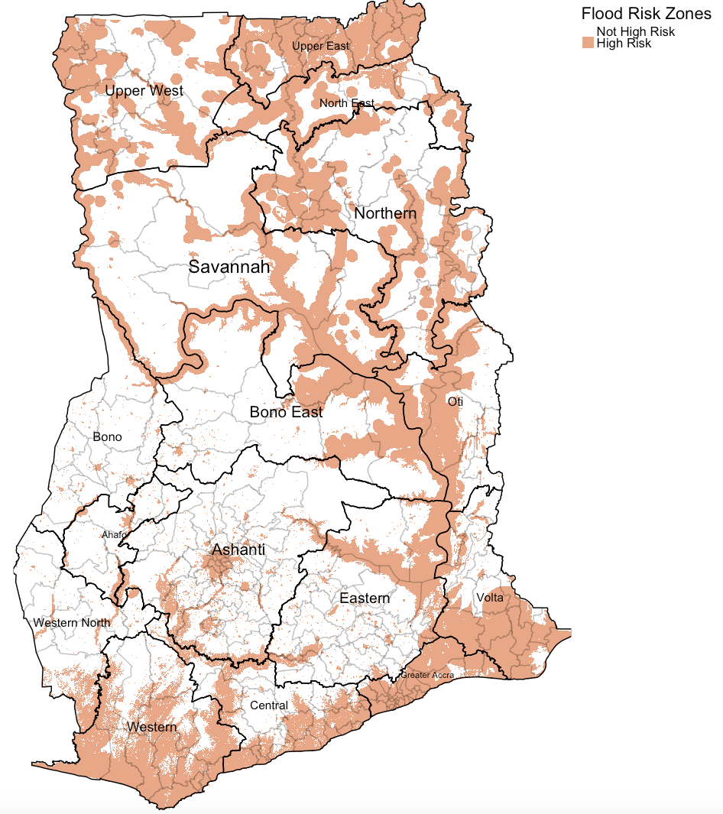

3 Introduction to Geoprocessing of Gridded Data in RStudio
3.1 Introduction
With the proliferation of open-source spatial dataset - risk models derived from environmental, sociodemographic and topological factors are becoming increasingly available for open research. Such models have broadly shown to be useful in delineating geographical areas of risk or suitability for a certain outcomes. Today, we are going to explore this qualitatively using a knowledge-driven approach.
3.1.1 Learning outcomes
To provide an introductory overview to the applicability of knowledge-driven methods, in particular, we are going to learn how to a set of decision rules or a set of conditions (based on existing knowledge) that are optimal for an outcome to occur. We will focus on flooding event to build from yesterday’s workshop. This simple technique is especially useful in a data-sparse situations, and is a more practical solution for organisations that want rapid results, or when for the first time the user is exploring the potential geographical limits of certain outcome.
3.1.2 Datasets & setting up the work directory
Before you begin do make sure to download all data by clicking here. Go to the “Workshop” folder and within it create a “Day 2”. Download and move all the data for this session in that folder.
Now set your working directory, Remember, for Windows, the work directory will be:
For MAC, the work directory will be:
3.1.3 Loading and installing packages
We will need to load the following packages:
sf: Simple Featurestmap: Thematic Mapping
The above packages sf and tmap should have been installed in the previous session(s). We will need to install a new package:
raster: Raster/gridded data analysis and manipulation
3.1.4 Loading datasets
Lets begin loading the following list of raster files, each is a variable of interest:
- Raster: Built-Settlements Extents in Ghana (100m resolution) named
Built-Settlements Extents 100m.tif - Raster: Distance to nearest inland waterbody in Ghana (100m resolution) named
Distance to nearest inland waterbody 100m.tif - Raster: Distance to nearest major waterway in Ghana (100m resolution) named
Distance to nearest major waterway 100m.tif - Raster: Precipitation in Ghana (100m resolution) named
Precipitation 100m Resampled.tif - Raster: Land Surface Elevation in Ghana (100m resolution) named
Elevation 100m.tif - Raster: Land Surface Slope (100m resolution) named
Slope 100m.tif
# load the raster
builtsettlements <- raster("Built-Settlements Extents 100m.tif")
dist_waterbody <- raster("Distance to nearest inland waterbody 100m.tif")
dist_waterways <- raster("Distance to nearest major waterway 100m.tif")
land_elevation <- raster("Elevation 100m.tif")
land_slope <- raster("Slope 100m.tif")
precipitation <- raster("Precipitation 100m Resampled.tif")Load the shapefile regional and district borders for Ghana:
- Shape file:
Regions.shp - Shape file:
Districts.shp
For some rasters, you will be able to inspect each raster to know its dimension, extent, resolution and minimum and maximum values. Since are going to stack all the rasters together, you definitely want the: dimension, extent and resolution to be the same. If there’s a slight difference the stack won’t work.
To visualize raster data, using examples of precipitation (mm) and proximity to a major river (km) - you can write the following code:
# Rainfall
# Spectral colours are useful for diverging scales "Spectral" is Rd-Or-Yl-Gr-Bu. "-Spectral" reverses the order
tm_shape(precipitation) + tm_raster(style = "cont", title = "Rainfall (mm)", palette= "-Spectral") +
tm_shape(districts) + tm_polygons(alpha = 0, border.col = "black") +
tm_layout(frame = FALSE, legend.outside = TRUE)
# Proximity to nearest major waterway
# We use "Blues" as the colour scheme
tm_shape(dist_waterways) + tm_raster(style = "cont", title = "Proximity to Waterways (km)", palette= "-Blues") +
tm_shape(districts) + tm_polygons(alpha = 0, border.col = "black") +
tm_layout(frame = FALSE, legend.outside = TRUE)
3.2 Mapping Overlays based on Decisions
3.2.1 Classification of raster
3.2.1.1 Waterways and Waterbodies
For each raster will be accompanied with certain decisions which we will have to reclassify in order to characterise the flood risk of surfaces in Ghana. For instance - we will use the following criteria for proximity to waterways or waterbodies.
We have summarized these limits or thresholds in a table as follows:
| Risk type | Threshold | Assigned Score |
|---|---|---|
| Very High Risk | 0-1 km | 5 |
| High Risk | 1-5 km | 4 |
| Moderate | 5-20 km | 3 |
| Low Risk | 20-50 km | 2 |
| Very Low Risk | +50 km | 1 |
We should use the aforementioned thresholds to produce a reclassifed raster map using the above criteria. This means that the pixel values of each raster layer will be equal to the above values if their pixels fall within its range.
Let us reclassify each of the water-based layers according to the above criteria, starting with waterways. Remember, we are reclassifying accordingly as:
- Values from 0 to 1 km as ‘5’ to represent ‘very high risk’
- Values from above 1 to 5 as ‘4’ to represent ‘high risk’
- Values from above 5 to 20 as ‘3’ to represent ‘moderate risk’
- Values from above 20 to 50 as ‘2’ to represent ‘low risk’
- Values from above 50+ as ‘1’ to represent ‘very low risk’
# list the categorization scheme in a vector
distance_risk_categories <- c(0, 1, 5, 1, 5, 4, 5, 20, 3, 20, 50, 2, 50, Inf, 1)
# convert the vector into a matrix
distance_risk_categories_matrix <- matrix(distance_risk_categories, ncol = 3, byrow = TRUE,
dimnames = list(NULL, c("from", "to", "value")))
# use the matrix to reclassify the desired raster
dist_waterways_categorised <- reclassify(dist_waterways, distance_risk_categories_matrix, right = TRUE, include.lowest = TRUE)This is what the output for reclassified waterways would look like:
tm_shape(dist_waterways_categorised) +
tm_raster(
style = "cat",
title = "Dist. to Waterway (km) ",
palette= c("#0571b0", "#92c5de", "#f7f7f7" , "#f4a582" ,"#ca0020"),
labels = c("Very Low Risk (+50km)", "Low Risk (20-50km)", "Moderate Risk (5-20km)", "High Risk (1-5km)", "Very High Risk (<1km)")) +
tm_shape(districts) + tm_polygons(alpha = 0, border.col = "black") +
tm_layout(frame = FALSE, legend.outside = TRUE)
We will apply the above situation to the waterbody raster by reclassifying it with the same criteria:
dist_waterbody_categorised <- reclassify(dist_waterbody, distance_risk_categories_matrix, right = TRUE, include.lowest = TRUE)The output should look something like:
tm_shape(dist_waterbody_categorised) +
tm_raster(
style = "cat",
title = "Dist. to Waterbody (km)",
palette= c("#0571b0", "#92c5de", "#f7f7f7" , "#f4a582" ,"#ca0020"),
labels = c("Very Low Risk (+50km)", "Low Risk (20-50km)", "Moderate Risk (5-20km)", "High Risk (1-5km)", "Very High Risk (<1km)")) +
tm_shape(districts) + tm_polygons(alpha = 0, border.col = "black") +
tm_layout(frame = FALSE, legend.outside = TRUE)
3.2.1.2 Elevation
For elevation, we have summarized these limits or thresholds for flood risk in a table as follows:
| Risk type | Threshold | Assigned Score |
|---|---|---|
| High Risk | <100m | 5 |
| Moderate | 100-500m | 3 |
| Low Risk | +500m | 1 |
Let us reclassify each of the elevation layer according to the above criteria. Remember, we are reclassifying accordingly as:
- Values up to 100 is labelled as ‘3’ to represent ‘high risk’
- Values from 100 to 500 is labelled ‘2’ to represent ‘moderate risk’
- Values from above 500 is labelled ‘1’ to represent ‘low risk’
# list the categorization scheme in a vector
elevation_risk_categories <- c(-Inf, 100, 5, 100, 500, 3, 500, Inf, 1)
# convert the vector into a matrix
elevation_risk_categories_matrix <- matrix(elevation_risk_categories, ncol = 3, byrow = TRUE,
dimnames = list(NULL, c("from", "to", "value")))
# use the matrix to reclassify the desired raster
elevation_categorised <- reclassify(land_elevation, elevation_risk_categories_matrix, right = TRUE, include.lowest = TRUE)This is what the output for reclassified elevation would look like:
tm_shape(elevation_categorised) +
tm_raster(
style = "cat",
title = "Land Surface Elevation (m) ",
palette= c("#0571b0", "#f7f7f7", "#ca0020"),
labels = c("Low Risk (+500m)", "Moderate Risk (100-500m)", "High Risk (<100m)")) +
tm_shape(districts) + tm_polygons(alpha = 0, border.col = "black") +
tm_layout(frame = FALSE, legend.outside = TRUE)
3.2.1.3 Slope
For slope, we have also summarized these limits or thresholds for flood risk in a table as follows:
| Risk type | Threshold | Assigned Score |
|---|---|---|
| High Risk | 0-5 degrees | 5 |
| Moderate | 5-15 degrees | 3 |
| Low Risk | +15 degrees | 1 |
Let us reclassify each of the slope layer according to the above criteria. Remember, we are reclassifying accordingly as:
- Values from 0 to 5 is labelled as ‘3’ to represent ‘high risk’
- Values from 5 to 15 is labelled ‘2’ to represent ‘moderate risk’
- Values from above 15 is labelled ‘1’ to represent ‘low risk’
# list the categorization scheme in a vector
slope_risk_categories <- c(0, 5, 5, 5, 15, 3, 15, Inf, 1)
# convert the vector into a matrix
slope_risk_categories_matrix <- matrix(slope_risk_categories, ncol = 3, byrow = TRUE,
dimnames = list(NULL, c("from", "to", "value")))
# use the matrix to reclassify the desired raster
slope_categorised <- reclassify(land_slope, slope_risk_categories_matrix, right = TRUE, include.lowest = TRUE)This is what the output for reclassified slope would look like:
tm_shape(slope_categorised) +
tm_raster(
style = "cat",
title = "Slope (Degrees) ",
palette= c("#0571b0", "#f7f7f7", "#ca0020"),
labels = c("Low Risk (+15)", "Moderate Risk (5-15)", "High Risk (0-5)")) +
tm_shape(districts) + tm_polygons(alpha = 0, border.col = "black") +
tm_layout(frame = FALSE, legend.outside = TRUE)
3.2.1.4 Built settlement
For built settlements, if only a binary indicator. We have also summarized these limits or thresholds for flood risk in a table as follows:
| Risk type | Threshold | Assigned Score |
|---|---|---|
| High Risk | Urban zones | 5 |
| Low Risk | Rural zones | 1 |
We simply classify it as follows:
- Values with 1 (i.e., Urbanised zone) is labelled as ‘5’ to represent ‘high risk’
- Values with 0 (i.e., Rural zone) is labelled ‘1’ to represent ‘low risk’
# list the categorization scheme in a vector - force it!
urbanareas_risk_categories <- c(0, 0.5, 1, 0.5, 1, 5)
# convert the vector into a matrix
urbanareas_risk_categories_matrix <- matrix(urbanareas_risk_categories, ncol = 3, byrow = TRUE,
dimnames = list(NULL, c("from", "to", "value")))
# use the matrix to reclassify the desired raster
urbanareas_categorised <- reclassify(builtsettlements, urbanareas_risk_categories_matrix, right = TRUE, include.lowest = TRUE)This is what the output for reclassified slope would look like:
tm_shape(urbanareas_categorised) +
tm_raster(
style = "cat",
title = "Built Settlements classification",
palette= c("lightgrey", "#ca0020"),
labels = c("Low Risk (Non-urban areas)", "High Risk (Urban areas)")) +
tm_shape(districts) + tm_polygons(alpha = 0, border.col = "black") +
tm_layout(frame = FALSE, legend.outside = TRUE)
3.2.1.5 Rainfall
For rainfall, we have summarized these limits or thresholds for flood risk in a table as follows:
| Risk type | Threshold | Assigned Score |
|---|---|---|
| Very High Risk | +250mm | 5 |
| High Risk | 200-250 mm | 4 |
| Moderate | 150-200 mm | 3 |
| Low Risk | 100-150 mm | 2 |
| Very Low Risk | 0-100 mm | 1 |
Let us reclassify the rainfall according to the above criteria. Remember, we are reclassifying accordingly as:
- Values from 0 to 100 mm is ‘1’ to represent ‘very low risk’
- Values from above 100 to 150 mm is ‘2’ to represent ‘low risk’
- Values from above 150 to 200 mm is ‘3’ to represent ‘moderate risk’
- Values from above 200 to 250 mm as ‘4’ to represent ‘high risk’
- Values from +250m is ‘5’ to represent ‘very high risk’
# list the categorization scheme in a vector
rain_risk_categories <- c(0, 100, 1, 100, 150, 2, 150, 200, 3, 200, 250, 4, 250, Inf, 5)
# convert the vector into a matrix
rain_risk_categories_matrix <- matrix(rain_risk_categories, ncol = 3, byrow = TRUE,
dimnames = list(NULL, c("from", "to", "value")))
# use the matrix to reclassify the desired raster
rain_categorised <- reclassify(precipitation, rain_risk_categories_matrix, right = TRUE, include.lowest = TRUE)This is what the output for reclassified waterways would look like:
tm_shape(rain_categorised) +
tm_raster(
style = "cat",
title = "Total Monthly Rainfall (mm) ",
palette= c("#0571b0", "#92c5de", "#f7f7f7" , "#f4a582" , "#ca0020"),
labels = c("Very Low Risk (<100mm)", "Low Risk (100-150mm)" ,"Moderate Risk (150-200mm)", "High Risk (200-250mm)", "Very High Risk (+250mm)")
) +
tm_shape(districts) + tm_polygons(alpha = 0, border.col = "black") +
tm_layout(frame = FALSE, legend.outside = TRUE)
3.2.2 Finding areas that flood prone based on reclassifed rasters through averaging
We can NOW identify the environmentally suitable areas for flood occurrence by averaging the score across the pixels. To do this, we must stake the rasters on top of each other to create a multiband raster object using the stack().
Create_Multiband_RasterStack <- stack(urbanareas_categorised, slope_categorised, elevation_categorised, dist_waterways_categorised, dist_waterbody_categorised, rain_categorised)We take the raster stack and use the function calc() to find the mean.
Finally, we can visualizing the output accordingly:
flood_risk_averaged_map <- tm_shape(FloodRisk_Score_Averaged) +
tm_raster(style = "cont", title = "Flood Risk Score (Sum)", palette="-RdYlGn") +
tm_shape(regions) + tm_polygons(alpha = 0, border.col = "black") + tm_text("NAME_1", size = "AREA", col = "black") +
tm_shape(districts) + tm_polygons(alpha = 0, border.col = "black", border.alpha = 0.15) +
tm_layout(frame = FALSE, legend.outside = TRUE)
We can also create a binary version of this above map by simply reclassify in the values as ‘0’ to represent anything with score below 4 as a low risk versus high for scores 4 and above - reclassed as 1
Here is the code:
flood_zone_categories <- c(0, 1, 0, 1, 2, 0, 2, 3, 0, 3, 4, 1, 4, 5, 1)
flood_zone_categories_matrix <- matrix(flood_zone_categories, ncol = 3, byrow = TRUE, dimnames = list(NULL, c("from", "to", "value")))
flood_risk_categorised <- reclassify(FloodRisk_Score_Averaged, flood_zone_categories_matrix, right = TRUE, include.lowest = TRUE)Here is the code for generating such output:
flood_risk_zoned_map <- tm_shape(flood_risk_categorised) +
tm_raster(style = "cat", title = "Flood Risk Zones", palette= c("white", "#f4a582"), labels = c("Not High Risk", "High Risk")) +
tm_shape(regions) + tm_polygons(alpha = 0, border.col = "black") + tm_text("NAME_1", size = "AREA", col = "black") +
tm_shape(districts) + tm_polygons(alpha = 0, border.col = "black", border.alpha = 0.15) +
tm_layout(frame = FALSE, legend.outside = TRUE)